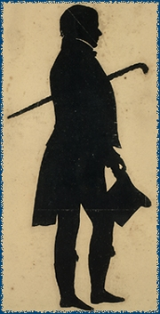

|
|
|||
|
|
Home | Biography | Works | Image
Collection | Recent Publications | Forthcoming
Events | Portraits | Correspondence | Links | The Corson CollectionThe collection of Scott materials gathered by James C. Corson, librarian, scholar, and Scottophile, and now to be found in Edinburgh University Library's Centre for Research Collections, is one of the most important collections of Scott materials in existence. James Clarkson Corson was born in Edinburgh on 30 June 1905. He was educated at Daniel Stewart's College, 1911-1924, before entering Edinburgh University to read history, in which he graduated on 28 June 1928. Corson stayed on at Edinburgh University for a further six years, obtaining the degree of Doctor of Philosophy in 1934 for his thesis on 'The English Revolution and the Doctrines of Resistance and Non-Resistance, 1688-1714: A Study in Sovereignty' |
||
|
 Silhouette of Scott by Augustin
Edouart |
Before he completed his postgraduate work, however, Corson had
taken up a post in the University
Library. At first he was employed as an Assistant Librarian,
but he soon rose to the position of Deputy Librarian in 1939,
where
he was to remain until his retirement in 1965. Corson served as
a Deputy to Lauriston Sharp, who, like Corson, was an Edinburgh
graduate; Sharp had joined the Library staff a few years before
Corson in the mid-1920s, first as Assistant Librarian, moving
on
to become Keeper of Manuscripts in 1931. Sharp and Corson served
their apprenticeships as academic librarians during the era
of F.C.
Nicholson, very much a scholar-librarian of the sort which is now
but a memory. In this atmosphere, the two apprentices were able
to undertake serious scholarly pursuits, Sharp editing the Early
Letters of Robert Wodrow for the Scottish History Society,
with the help of Corson who 'corrected such proofs as I have given
him
with meticulous accuracy, and has given me the benefit of his expert
knowledge of the art of indexing', a skill which would later be
used for the benefit of Scott scholars. Corson assisted Sharp
in presiding over the Library during the difficult years of the
war, and during the less difficult years of the 1950s, during which
time Sharp was giving serious consideration to the problems of
accommodation
in Old College and to the preliminary stages of planning the construction
of what is now the Main Library building in George Square. Corson
had to look after the Library for a year following the sudden death
of his old friend. When E. R. S. Fifoot was eventually appointed
as Sharp's successor, Corson retired. |
||
| James Clarkson
Corson first became infatuated with Walter Scott in 1917 as a result
of reading The Lady of the Lake
as a set text in his English class at school, and he devoured all
the Waverley Novels whilst still in his teens. He visited Abbotsford
for the first time in 1919, an experience which he later described
as a 'milestone', and which started the infatuation with that building
which was to last the rest of his life. He started to collect seriously
from the Centenary of Scott's death in 1932 onwards, when he began
to amass posters, programmes, and newspaper cuttings. The first major
public sign of his devotion to Scott appeared in 1943 with the publication
of his A Bibliography of Sir Walter Scott: A Classified and Annotated
List of Books and Articles Relating to his Life and Works 1797-1940.
A major contribution to literary bibliography of the time, this work
can still be used with profit (and caution) alongside Todd and Bowden's
magisterial Scott bibliography.
During the 1950's Corson was able to find the time to publish a considerable amount of bibliographical and historiographical work on Scott. Two articles on The Border Antiquities appeared in the early issues of the new journal of Scottish bibliography, The Bibliotheck (1956 and 1960), which were then followed by two articles in the same journal on materials found in the Library at Abbotsford, namely Chapbooks (1960) and American books (1963). In 1955 Corson delivered the Walter Scott Lectures in the University, on the state of 'Scott Studies', published as two articles in the University of Edinburgh Journal, vol.18 (1955-57), in which he both surveyed the long history of scholarship on Scott, and took the opportunity to correct some biographical errors about the life of Scott. The final summation of Corson's scholarly life was of course his Notes and Index to Sir Herbert Grierson's Edition of the Letters of Sir Walter Scott (Oxford, 1979), in which he displayed both his deep knowledge of Scott's life and works, and his network of correspondence, but also his aptitude for indexing, first hinted at by Sharp in the 1930s. Corson's obsession with Scott did not only manifest itself in his writings on the man. Corson also devoted much of his life to amassing a huge collection of materials by and about Scott, a collection quite unique in both its breadth and depth. The collection can be divided into five categories: printed books, manuscripts, press cuttings, visual materials (prints, drawings and paintings), and realia. The printed books themselves formed Corson's basic reference library; it was built up patiently throughout his adult life: he himself regarded it as containing 'practically every work … that the student of Scott is likely to want to consult'. The books number some 6,000 printed editions, mostly editions of Scott's works, including a sampling of first editions, but consisting in the main of later editions, particularly strong on the popular editions of the later 19th and early 20th century, mostly British, but with some American and European editions and translations. Among the highlights of this portion of the Corson Collection are a presentation copy from Scott to Anna Seward of The Chase (1796), Charles Kirkpatrick Sharpe's copy of the first edition of Waverley (1814), the Duke of Wellington's copy of St Ronan's Well (1824), and an early proof of The Lady of the Lake. Works about Scott also feature prominently, especially biographical and critical studies, with numerous editions of Lockhart's Life of Sir Walter Scott. This category of materials also includes a large number of musical scores, playbills, and theatre programmes which have a connection with Scott, no matter how tenuous. Finally, there are a large number of books from the 18th century onwards concerning the Scottish Borders and other parts of Scotland and England associated with Scott. The printed books have all been catalogued into the Edinburgh University Library online catalogue. The manuscript material is less comprehensive in its coverage, but includes a number of literary manuscripts such as the handwritten text of the only sermon Scott ever wrote, and a number of Scott letters. The main portion of the manuscripts, however, contains a large and rather eclectic array of letters by Scott scholars and others after his death, but referring in some way to Scott and his works. The press cuttings contain references to Scott in the Scottish and UK press from the Centenary of Scott's death in 1932 to the late 1980's. They constitute an invaluable record of the presence of Scott in the national consciousness throughout the twentieth-century and would be of great interest to any scholar researching Scott's role in the the formation of national identity. Perhaps the most interesting part of the whole collection is the section devoted to illustrative material. This term covers a multitude of visual formats, mostly unbound, and consisting of works of art on paper, but also including 25 oil paintings by artists such as David Roberts, Robert Scott Lauder, and Sir William Allan (his painting of the 'Fair Maid of Perth' was recently loaned to the City Arts Centre, Edinburgh, for their exhibition 'William Allan: Artist Adventurer' and also appears in their catalogue by Jeremy Howard). The bulk of the illustrative material, however, is to be found in the collection of ca. 10,000 engravings, etchings, lithographs, photographs, and drawings, including original drawings by artists such as James Skene of Rubislaw (recently loaned to the National Galleries of Scotland exhibition 'O Caledonia'), and David Octavius Hill (last loaned to the Scottish Arts Council touring exhibition on Hill and Adamson curated by Katherine Michaelson). The realia in the collection are where Corson's obsession with Scott took hold in its most astonishing form, including not only miniature bed-warming pans, but toy soldiers, shortbread tins, tea towels, and other examples of material culture associated with Scott. The material is undoubtedly of serious interest to the researcher interested not only in Scott, but in material culture and national identity. Both the realia and the illustrative material are currently being entered in an Image Database which supplies an image and description of each item. Finally, mention should be made of Corson's most significant contribution to his own collection: an index which he referred to as his 'Scott Dictionary', some 200,000 cards containing notes on every aspect of Scott's life and works begun in 1935 and maintained up until his death in 1988. The collection was sold by Corson to the University under an agreement in 1978, and it was transferred to the University Library in Edinburgh in 1989. After his death, Corson's widow generously bequeathed a sizeable estate to the University to maintain and develop the collection. |
|||
|
Last updated: 20-Sept-2011 |
|||